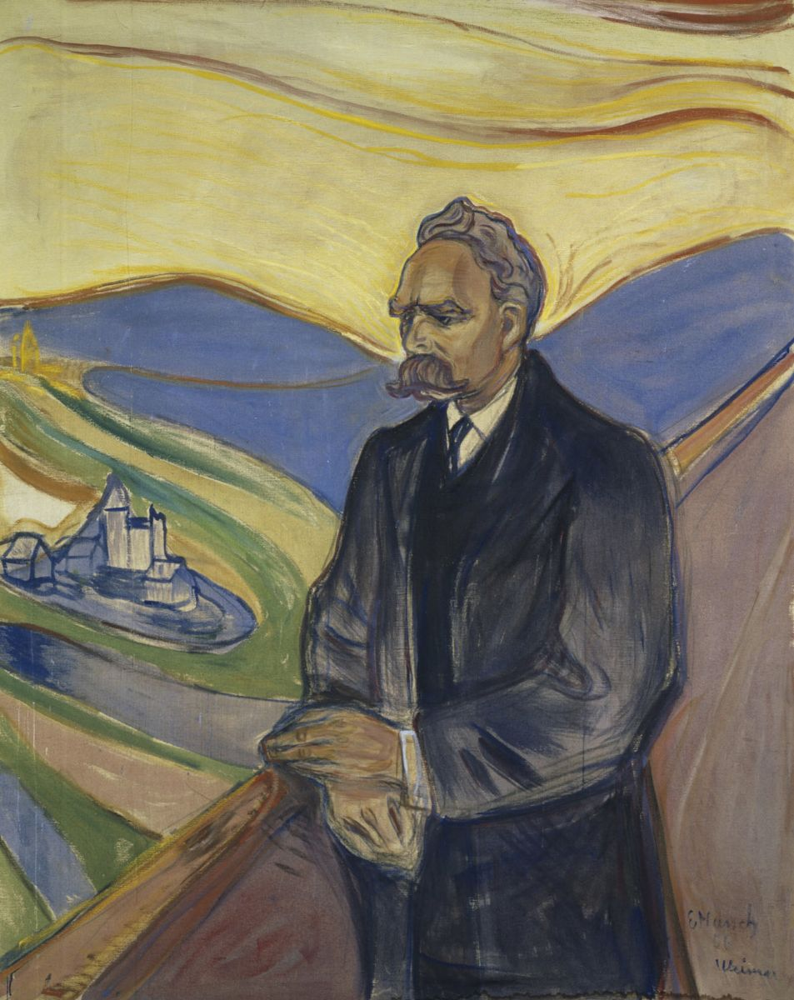

Run down the list of virtues the wise agree on. Humility. Selflessness. Turning the other cheek. Pity for the weak. Putting yourself last. Almost every book in this series recommends some version of making yourself smaller. Friedrich Nietzsche read the same list and saw a crime scene.
This is the dissent post. The whole point of a series like this is that the great traditions, walled off from each other by oceans and centuries, keep arriving at the same handful of answers, and that convergence feels like evidence. Lose the self. Yield. Serve. Be meek. When Buddhists and Christians and Taoists and the recovering drunks of AA all independently land on "selfishness is the root of the trouble," it starts to sound like they found something real.
Nietzsche is the man who looks at that agreement and says: of course they agree. They all lost the same fight, and this is the story the losers tell. He is the most quoted philosopher who ever lived, and the most misquoted, a German classics professor who wrote his hardest books in the 1880s, went incurably insane at forty-four, and never knew that the next century would carve his words onto the wrong monuments. His claim, the one it takes him several books to build, is that the morality you were raised inside is not eternal and not from God. It was made by particular people, for a particular reason, and the reason does not flatter you.

Two of his books carry the argument, and one carries the famous lines. Beyond Good and Evil (1886) and On the Genealogy of Morals (1887) are where he makes the case, in something close to ordinary prose. Thus Spoke Zarathustra (1883 to 1885) is the strange biblical poem where the slogans live: God is dead, the overman, the eternal return. The featured translation here is Walter Kaufmann's, the Princeton scholar who, after the war, rescued Nietzsche from the people who had stolen him (that story is the last stop). On the lines where the translators split hard, and on the German words that lose everything in English, you can open a panel and see Kaufmann set against R. J. Hollingdale and against Maudemarie Clark and Alan Swensen.
Stop 1 / The Gay Science, 1882
God is dead, and we are the ones who killed him
Kaufmann / The Gay Science, section 125, "The madman"
"Whither is God?" he cried. "I will tell you. We have killed him, you and I. All of us are his murderers. But how did we do this? How could we drink up the sea? Who gave us the sponge to wipe away the entire horizon? What were we doing when we unchained this earth from its sun?"
"God is dead. God remains dead. And we have killed him. How shall we comfort ourselves, the murderers of all murderers?"
This is the most famous thing Nietzsche wrote, and almost everyone gets the tone wrong. It is not a triumphant atheist slogan. Read who says it. A madman lights a lantern in the bright morning, runs into the marketplace, and cries that he is looking for God. The crowd standing around does not believe in God anyway, so they laugh at him. And he turns on them and says: you are the ones who killed him. You did it, and you do not even know what you have done.
"God is dead" is not a claim about heaven. It is a claim about us, here, on the ground. Nietzsche means that the God who used to anchor everything, who made the moral law binding and the universe meaningful and human life part of a story going somewhere, has quietly stopped being believable to the people who run the modern world. Not refuted in an argument. Just slowly drained of reality by science, by history, by the same restless European mind that had once built the cathedrals. We dissolved our own foundation and kept living in the house.
And here is the part the marketplace atheists miss, the reason the messenger is a madman and not a winner. God was load-bearing. He was the reason your values were Values and not just your preferences, the reason "thou shalt not" came with an authority behind it instead of a shrug. Pull him out and the morality is still sitting there, every commandment in place, but nothing holds it up. Most people calmly dropped the believing and kept the morality and never felt the ground go. The madman feels it. He asks where we are moving now, away from all suns, whether we are not straying as through an infinite nothing, whether empty space is not breathing on us, whether it has not gotten colder.
That cold is the subject of this whole post. Nietzsche thought the death of God was the largest event in human history and that its light had not yet reached human ears, that it would take a century or two for people to understand what had been done and what it would cost. He was not gloating. He was the first one to take it completely seriously, to see that you do not get to keep the meek-shall-inherit morality once you have quietly buried the one who promised they would.
Stop 2 / Beyond Good and Evil, section 260
There was never one morality. There were two.
Kaufmann / Beyond Good and Evil, section 260
There are master morality and slave morality. [...] The noble type of man experiences itself as determining values; it does not need approval; it judges, "what is harmful to me is harmful in itself"; it knows itself to be that which first accords honor to things; it is value-creating.
Nietzsche was a philologist before he was a philosopher, a professor of ancient languages who spent his twenties staring at where words come from. So when he attacks morality, he does not argue about it like an ethicist. He digs it up like an etymologist. Where do "good" and "evil" actually come from? And what he claims to find is that they are not one stable pair handed down from on high. There have been two different moralities, built by two opposite kinds of people, pointing in opposite directions.
The first he calls master morality. Picture the people on top in an old warrior world, the strong, the proud, the ones who win. They invent "good" by looking in the mirror. Good is what they are: powerful, confident, truthful, generous out of overflow, able to act. And "bad," in this scheme, is just an afterthought, a word for the opposite kind of person, the low and weak and cowardly. The order matters. The noble says "I am good" first, with relish, and "those others are bad" only as a leftover. The reference point is himself, and he is delighted with it.
The second is slave morality, and it is built by exactly the people the masters are stepping on. They cannot win by strength; that game is lost before it starts. So they open a second front, the only one available to the powerless, the field of values itself. And crucially, they build their morality in the opposite order. They start with the enemy. The strong, confident, dangerous master becomes evil, the first idea, the thing to be condemned. And only then, by subtraction, does the slave arrive at "good," which turns out to mean everything the master is not: meek, humble, patient, harmless, self-denying, safe.
Hold the two scoreboards next to each other and you see the trick. They rate the same man in opposite directions. The master's "good man," the strong proud one, is precisely the slave's "evil man." Same human being, two verdicts, because the people doing the scoring stand at opposite ends of an old defeat. This is why Nietzsche titled the book Beyond Good and Evil. He is not saying be evil. He is saying "good and evil," that specific pair, is not the eternal axis of the universe. It is one side's weapon, and you have been told it was the sky.
Master and slave, two translations
Nietzsche's section 260 is the clearest statement of the two-moralities idea. Watch the two standard English versions handle the catalogue of qualities that slave morality honors. The list is the giveaway: it is, almost exactly, the list of virtues every other book in this series recommends.
Read the list again: pity, humility, patience, the warm heart, the helping hand. Nietzsche's point is not that these are bad things to have around. It is that a whole civilization came to call these "the good," and forgot that the word once meant something nearly opposite, and forgot who did the renaming and why.
Stop 3 / On the Genealogy of Morals, First Essay
Ressentiment: how weakness talked itself into a halo
Kaufmann / On the Genealogy of Morals, First Essay, section 10
The slave revolt in morality begins when ressentiment itself becomes creative and gives birth to values: the ressentiment of natures that are denied the true reaction, that of deeds, and compensate themselves with an imaginary revenge. While every noble morality develops from a triumphant affirmation of itself, slave morality from the outset says No to what is "outside," what is "different," what is "not itself"; and this No is its creative deed.
The next year, in the Genealogy, Nietzsche names the engine that drives the slave revolt, and he keeps the name in French because no English word is mean enough: ressentiment. It is not quite resentment. It is the specific chemistry of a person who has been hurt, cannot hit back, and has nowhere to put the injury. The wound cannot discharge outward as an act, so it turns inward and goes rancid, and then it goes creative. Revenge you cannot take in the world, you take in your head, by building a moral universe in which your enemy is damned and you are saved.
Look again at the direction of the two moralities, because this is the whole argument in one move. The noble starts with a yes: I am good, and that is the joyful fact, and the rest of you are a footnote. The slave cannot start there, because the honest first fact about the slave is defeat. So slave morality starts with a no, pointed at the enemy: you are evil. And then, only by bouncing off that no, it gets to itself: and therefore I, who am not you, must be good. It is a morality that has to look outside and hate before it can look inside and approve. It needs an enemy the way a fire needs air.
Then comes the sharpest thing in the book, the lambs and the birds of prey. Of course the lambs think the great birds of prey are evil, Nietzsche says, and of course they think themselves good for not being birds of prey. But a lamb that does not carry off lambs is not being virtuous. It is being a lamb. It could not do otherwise if it tried. And there is no little neutral lamb-self sitting behind the lamb, freely choosing meekness, who deserves moral credit for the choice. Strength is not free to act weak. Yet slave morality takes exactly this sleight of hand and builds a religion on it: it treats the strong as if they could simply decide to be harmless, calls them wicked for not deciding it, and calls the weak good for a weakness they never chose.
That is the con, stated plainly, and it is genuinely clever and genuinely nasty. Weakness gets relabeled as a moral achievement. "I cannot take revenge" becomes "I forgive." "I cannot win" becomes "I am humble." "I am afraid to act" becomes "I am patient." "I am nobody" becomes "I am meek, and the meek shall inherit the earth." Inability, dressed as virtue and handed a crown. Once you have seen the move you cannot unsee it, and Nietzsche means for it to ruin some of your favorite words.
The keystone sentence, two translations, and one French word
First Essay, section 10, the load-bearing sentence of the whole book. The newer Clark and Swensen translation was made to be more literal than Kaufmann's, and the split on the second half is worth seeing. Watch the hinge.
Kaufmann's noble morality is a "triumphant affirmation of itself"; Clark and Swensen sharpen it to a "triumphant yes-saying to oneself," which is closer to the point. The noble says Yes to himself first. The slave can only get to himself by first saying No to someone else. Both keep ressentiment in French, as Nietzsche did inside his German, because plain "resentment" lost the festering, never-let-it-go weight of it. It is not a flash of anger. It is anger with nowhere to go, kept warm for years, slowly turning into a morality.
Stop 4 / The attack on everything this series agrees on
What the rest of this series calls wisdom, he calls a wound
Kaufmann / The Antichrist, section 2
What is good? Everything that heightens the feeling of power in man, the will to power, power itself. What is bad? Everything that is born of weakness. What is happiness? The feeling that power is growing, that resistance is overcome.
This is the stop where it gets personal for anyone who has read the rest of these posts. Line up the convergence again, the thing the series keeps treating as a quiet miracle. The Tao's water, which wins by yielding and taking the low place everyone else avoids. The Buddha, blowing out craving and the self like a candle. The Sermon on the Mount: blessed are the meek, the poor, the mourning, the persecuted. The Gita's surrender of the fruits of action. AA, naming selfishness as the root of all of it. Confucius deferring, the Stoics shrinking the self to a point. Different oceans, different centuries, one recommendation: get smaller, want less, put yourself last.
Nietzsche looks straight at that agreement and refuses to be moved by it. To him it is not many independent witnesses converging on a truth. It is one thing wearing many masks. It is slave morality, total and victorious, having so thoroughly won that its values now look like the values, like air, like wisdom itself. The agreement does not impress him. It frightens him. It is the measure of how completely the revolt succeeded, to the point where the strong themselves now kneel and call kneeling good.
His prime target, the virtue he goes after hardest, is the one nearly every tradition treats as holiest: pity. Compassion, fellow-feeling, Mitleid, literally "suffering-with." Watch what he does to it, because it is the whole method in miniature. Pity, he says, is a multiplier of suffering: it spreads the misery from the one who has it to the one who feels for them, so now there are two. It preserves what is failing and ought, by life's own honesty, to be allowed to fail. And it quietly flatters the one doing the pitying while keeping the pitied person down in the role of the helped. A civilization that organizes itself around protecting the weakest, he argues, slowly makes the weakest the measure of everyone, and pulls the whole species down toward them.
And then he offers his counter-scoreboard, and it is deliberately monstrous: good is what raises power and life, bad is what comes out of weakness, and the warmth you should trust least is the one that asks you to become less. Here is where honesty costs something, so take it straight. This is not a misreading you can sand off. Nietzsche really does want to rank human beings. He really does hold the herd in contempt, really does think equality and pity are forms of decadence, really does mean for the strong to stop apologizing. The gentle, life-affirming Nietzsche of the inspirational posters is a forgery. The man genuinely believed that the morality you think makes you good is a sickness you caught from people who envied the healthy.
So this is the stop, by the design of this whole series, where we let the punch land and keep our hands down. Every other post here is in some sense an answer to this one, a case for why the small self is the wise self. This post does not answer. If "blessed are the meek" can take this hit and stay standing, it stays standing on its own legs, which is the only way it was ever worth anything.
Stop 5 / Beyond Good and Evil, section 13
The will to power, and the word everyone gets wrong
Kaufmann / Beyond Good and Evil, section 13
A living thing seeks above all to discharge its strength, life itself is will to power; self-preservation is only one of the indirect and most frequent results.
Tear down God, tear down morality, and you owe the reader a true picture of what is actually under there, what a human being runs on when you strip off the costumes. Nietzsche's answer is the will to power, the single most misunderstood phrase he ever coined. We have to get it right before the comic books and the dictators do.
It does not mainly mean wanting to dominate other people. It is bigger and quieter than that. The will to power is the drive in everything alive to discharge its strength, to grow, to overcome resistance, to extend itself and become more. A tree splitting a rock for light. A child learning to walk. An argument trying to win. A craftsman getting better at the craft. Even self-preservation, even survival itself, Nietzsche says, is only a side effect of this, not the goal. Life does not fundamentally want to keep going. It wants to increase. Power here is closer to "the feeling of getting stronger" than to a boot on someone's neck.
He needs this idea because it is his replacement floor, the natural fact he wants to put where God used to be. The English utilitarians, he sneers, think people pursue happiness and the avoidance of pain, which to him is shopkeeper philosophy, a theory of life invented by people who have never felt fully alive. No. Underneath the pleasures and the pains, the one drive is the reach for more, for mastery, for the expansion of what you are.
And here is where it loops back and bites the whole earlier argument, in the most Nietzschean twist of all. Slave morality is itself a will to power. It is the will to power of people who had no other kind available. If you cannot dominate with muscle or wealth or armies, there is still one lever left: you can invent a system of values that makes the strong feel guilty and the meek feel holy, and you can conquer the world from below, through its conscience. The meek are not the opposite of the will to power. They are some of its most successful agents. They just found the sneakiest weapon ever built, and they called it goodness.
Four German words that lose everything in English
More than most thinkers, Nietzsche turns on a handful of words that English mangles. If you only carry four out of this post, carry these.
Not "resentment," which is a passing mood. It is an injury you cannot avenge, kept and fed until it curdles into a whole morality. The hidden engine of the slave revolt. Nietzsche wrote it in French inside his German because German had no word bitter enough.
The drive of all life to grow and overcome, not (mainly) to boss people around. The mistranslation into a simple lust for domination is most of what went wrong in the twentieth century. Note too: The Will to Power, the "book," is not a book he wrote. It was stitched together from his discarded notes after he was insane (last stop).
The person who can create values out of himself after God. Not a master race and not a comic-book strongman, both of which come straight from bad translations of this one word. We give it its own stop next.
The task he set himself: not to swap good things for bad ones, but to put the whole scoreboard on trial, to ask the question morality forbids, which is whether our values are themselves any good.
Stop 6 / Thus Spoke Zarathustra, the Prologue
The overman: not a master race, a task
Kaufmann / Thus Spoke Zarathustra, Prologue, sections 3 to 4
I teach you the overman. Man is something that shall be overcome. What have you done to overcome him?
Man is a rope, tied between beast and overman, a rope over an abyss. [...] What is great in man is that he is a bridge and not an end.
If the old values are dead and exposed as somebody's old weapon, then who makes the new ones? Nietzsche's name for the answer is the Übermensch, and we have to clear the wreckage off the word before we can use it. Kaufmann translates it "overman." The older translations said "superman," which handed the twentieth century a strongman in a cape and, far worse, a master race. Both readings are the opposite of what the word is doing.
The overman is not a kind of person you are born as. It is not a blood type or a nation or a body. It is a task, and the task is this: to be the one who can stand in the empty space the madman described, the cold place with no God and no inherited values, and not freeze, and not crawl back to the old religion for comfort, but instead create values out of his own substance. To say "this shall be good" and mean it on his own authority, with nothing above him co-signing. The whole argument has been heading here. Once you truly see that values were always made by someone, the nobles making "good and bad," the slaves making "good and evil," the only honest question left is who makes them now, and whether anyone can do it on purpose, eyes open, after God.
The rope is the image to keep. Man is a rope stretched across an abyss, tied between the animal he came from and the overman he might become. What is worth anything in a human being, Nietzsche says, is not that he is a destination but that he is a bridge, a crossing-over, a thing that exists to be gotten past. You are not the point. The overcoming is the point, starting with overcoming yourself. That is the part the master-race reading has to delete to function, because a master race is a finish line, a people who have arrived and now sit on top. Zarathustra's overman never arrives. He is permanent self-overcoming, which is the most personal and least tribal idea imaginable.
Now the weakness, because it is a real one. Nietzsche is far better at the demolition than the rebuild. He can tell you, with terrible clarity, that the old values are a slave's revenge and that you must now make your own, but he is vague and rhapsodic about how, exactly, a person spins real values out of nothing but their own will without simply inventing a private religion or a justification for doing whatever they wanted anyway. The overman is a direction, a high bar held up against the cold, more than a set of instructions. But you can feel the seriousness of the demand. He is asking whether a human being can grow up all the way, past needing the universe to tuck them in.
One word, a century of trouble: Übermensch
Ich lehre euch den Übermenschen.
"I teach you the ____." The most consequential single word in Nietzsche, and the translators have never agreed. Every choice leaks something.
The two early translators, Common and Hollingdale, both reached for "Superman," and that one word handed the twentieth century a man in a cape and, far worse, a master race. Kaufmann fought for "overman" to kill the "super" reading, and Del Caro's recent Cambridge version keeps it. The German über is the over of "overcome," not the super of "superior." The word is about getting past the human, starting with yourself, not about being a better grade of human than the people next to you. Notice too that Common says man is "to be surpassed," while Kaufmann says "overcome": Kaufmann's choice keeps the link to "over-man" that the whole image depends on.
Stop 7 / The Gay Science, sections 341 and 276
Would you live this exact life again, forever?
Kaufmann / The Gay Science, section 341, "The greatest weight"
What, if some day or night a demon were to steal after you in your loneliest loneliness and say to you: "This life as you now live it and have lived it, you will have to live once more and innumerable times more; and there will be nothing new in it, but every pain and every joy and every thought and sigh and everything unutterably small or great in your life will have to return to you, all in the same succession and sequence, even this spider and this moonlight between the trees, and even this moment and I myself."
Would you not throw yourself down and gnash your teeth and curse the demon who spoke thus? Or have you once experienced a tremendous moment when you would have answered him: "You are a god and never have I heard anything more divine."
Here is the constructive heart of the whole grim project, and it is the strangest and most beautiful thing Nietzsche wrote. With God gone, there is no final judge to tell you at the end whether your life was good, no heaven to redeem it, no story arc that pays off your suffering later. So how could you ever know if you built a life worth living? Nietzsche's test is a thought experiment he calls the eternal recurrence, and he calls it "the greatest weight."
Imagine, he says, that late one night a demon creeps into your loneliest loneliness and tells you this: the life you are living now, you will live again, and again, infinitely. Not an improved version. This exact one, every detail in the same order, every joy and every humiliation and every wasted afternoon, the spider in the moonlight and this very conversation, forever, with nothing ever new. Would you collapse and curse him? Or have you ever had a single moment so full that you would have called him a god for promising it back?
Set aside whether it is literally true. Nietzsche flirted with arguing that the cosmos really does repeat, and you can let that go; as a piece of physics it is a curiosity. As a test it is a guillotine. It asks the one question that survives the death of God. Not "would God approve of this life," but "would you take it again, the whole thing, unedited, on a loop, with no promise of anything better waiting." Most people cannot say yes, and the reason they cannot is that most people are not living their life so much as enduring it, leaning on a someday, a heaven, a retirement, a payoff that excuses the present. Take away the payoff and the question lands with its full weight. This is it. Is it enough?
His answer, for the one who passes, is two Latin words he loved: amor fati, love of fate. Not gritted-teeth acceptance, not grim resignation, not making peace with your lot. Something much steeper: to want your life, all of it, the necessary and the awful together, so completely that you would clamp it to you and demand it again. The passage that gives the idea its name reads almost like a vow. "I want to learn more and more to see as beautiful what is necessary in things," he wrote. "Amor fati: let that be my love from henceforth! ... some day I wish to be only a Yes-sayer." The same man who wrote the cruelest pages in modern philosophy spent his deepest energy on the hardest possible Yes to being alive. Strip out God, strip out the inherited values, strip out the comfort of pity, and what he is clearing the ground for is a person who can love their one real life without needing anything above it to sign the permission slip.
Stop 8 / What was done to him after he could no longer speak
The theft: his sister, the forgery, and the Nazis
Kaufmann's edition / Nietzsche to his sister Elisabeth, around Christmas 1887
It is a matter of honor with me to be absolutely clean and unequivocal in relation to anti-Semitism, namely, opposed to it, as I am in my writings.
Now the part you have to tell carefully, because it is the most famous thing "everyone knows" about Nietzsche, and most of what everyone knows is wrong in both directions. Take the facts flat.
In January 1889, in a square in Turin, Nietzsche broke down. The story everyone tells, that he saw a cabman beating a horse and threw his arms around its neck to shield it, is a good story and probably not true; it surfaces only years later, from his landlord's family, and the people who came to collect him recorded only that he had collapsed. What is certain is the result. He was forty-four. He never wrote a sane sentence again. He spent his last eleven years as an invalid, tended first by his mother and then by his sister, mostly silent, and died in 1900 without the faintest idea what was coming. Everything done with his name was done while he was insane or dead. He got no vote.
His sister got the only vote that counted. Elisabeth Förster-Nietzsche had married Bernhard Förster, one of Germany's loudest antisemitic agitators, a man who helped organize the petition to strip German Jews of their rights, and the two of them had sailed to Paraguay to plant a racially pure "Aryan" colony in the jungle. It collapsed; Förster, broke and exposed as a swindler, killed himself. Elisabeth came home, took legal control of her helpless brother and every page he had ever written, built an archive around him, and crowned herself the keeper of his meaning. Then she went to work on the meaning itself.
She gathered up the notes he had written and thrown away and published them as a finished book, The Will to Power, arranged to look like the philosophical system he had never actually built. She decided who saw the manuscripts. She suppressed what embarrassed her, doctored what she kept, and is documented to have faked correspondence, in one notorious case dripping ink over the word "mother" so that a letter written to their mother would read as a letter to her. And she aimed the whole monument at German nationalism and the antisemitism her brother had spent his sane life despising.
She lived long enough to make the gift official. She fell for Mussolini first, then for Hitler. Hitler came to the archive in Weimar; there is a photograph of him gazing up at the bust of the philosopher whose words were now being printed on a politics of conquest. She gave him, by most accounts, her brother's walking stick. When she died in 1935, Hitler came to the funeral. The regime took the looted vocabulary, will to power, master morality, blond beast, superman, and stamped it on the Reich.
Now the correction, which has to be quoted rather than asserted, because this is the part a hostile reader came for. The real Nietzsche had broken with Wagner, his early idol, as Wagner sank into German-Christian piety and the antisemitic Bayreuth set. In the books he actually published, he called the Jews "the strongest, toughest, and purest race" in Europe and said it would be fair to throw the "anti-Semitic screamers" out of the country. He filed the antisemites of his day under the very diagnosis this post has been building, the resentful sick, taking their revenge on the strong. He mocked German nationalism without mercy: "'Deutschland, Deutschland über alles,'" he wrote, "I fear that was the end of German philosophy." And days into his collapse, scrawling deranged postcards signed "Dionysos," one of the things his breaking mind reached for was the line that he was "just having all anti-Semites shot."
But do not over-correct, because the comfortable version is a lie too. The appropriation was a distortion, not an invention from nothing. Nietzsche really did rank human beings and hold the herd in contempt. He really did write "master morality" and "the blond beast" and dream of a higher type bred up out of the mediocre mass. He really did call pity and equality forms of decadence, and really did write, in plain published German, that the weak and the failing should be allowed to perish rather than propped up. The Nazis read him dishonestly, tearing the lines they liked out of the argument and ignoring everything he said about Germany and the Jews. But they were not reading a pacifist, and pretending he was a gentle humanist insults both your intelligence and his. The honest sentence holds both halves: they lied about what he meant, and he had handed them a vocabulary built for the looting.
The rescue came after the war. Walter Kaufmann, whose translation runs through this whole post, a German Jew who had fled the Nazis and come back as an American professor, pulled the real Nietzsche out of his sister's wreckage; the Italian editors Giorgio Colli and Mazzino Montinari went to the manuscripts and showed exactly what she had cut, moved, and faked. The letter at the top of this stop is part of that story. The original in Nietzsche's own hand is lost. What survives is a copy his sister kept, and scholars trust it precisely because she had every reason to burn it.
The end of the walk
The one book we leave standing
So we leave him there, in the marketplace, lantern lit in the morning, having told the crowd something they were not ready to hear. Every other post in this series is, in its way, a defense of the small self: lose it, yield it, serve through it, spend it on others. Each one can be read as an answer to the man in this post. And a series that only ever introduced you to the books that agree with each other would be a comfort, not an education.
He is the stress test. He stands at the exact spot where all the traditions converge, the place where they all say "make yourself less," and he says that agreement is the fingerprint of an ancient revenge, that your humility is inherited helplessness, that your pity is a slow poison, that the meekness you were taught to be proud of is a wound someone talked you into calling a virtue. We have not rebutted a word of it, on purpose. If "blessed are the meek" survives this, it survives because it is true and strong, not because we kept the strongest objection out of the room.
And it would be against everything he wrote to end by telling you what to think of him. He did not want disciples; he wanted to be gotten through and left behind, a bridge and not an end. So: decide for yourself. Read the man in the marketplace one more time and ask which one he is. The lunatic raving at dawn, or the only person in the square who is actually awake.
Where the text comes from
The featured translation throughout is Walter Kaufmann's, the editions that made Nietzsche legible in English after the war: The Gay Science (Vintage, 1974), Beyond Good and Evil (Vintage, 1966), On the Genealogy of Morals (with R. J. Hollingdale, Vintage, 1967), Thus Spoke Zarathustra and The Antichrist (in The Portable Nietzsche, Viking, 1954). Every quotation is verbatim; the side panels stack Kaufmann against the other major translators on the lines where they most famously diverge, and every translator is named.
- The featured walk is Walter Kaufmann (Princeton), whose 1950 book and translations rescued Nietzsche from his sister's distortions and the Nazi reading.
- The comparison panels stack R. J. Hollingdale (the other standard postwar translator, Penguin), Maudemarie Clark and Alan J. Swensen (the more literal Genealogy, Hackett, 1998), and the early Thomas Common (1909) and modern Adrian Del Caro (Cambridge, 2006) renderings of Übermensch.
- The two books that carry the argument are Beyond Good and Evil (1886) and On the Genealogy of Morals (1887); the famous lines come from Thus Spoke Zarathustra (1883 to 1885), The Gay Science (1882, expanded 1887), and The Antichrist (1888).
- On the life and the misappropriation, the account draws on the Stanford Encyclopedia of Philosophy entry on Nietzsche, Walter Kaufmann's Nietzsche: Philosopher, Psychologist, Antichrist (1950), and Sue Prideaux's biography I Am Dynamite! (2018).
One honest note about the sources themselves. The Will to Power is quoted nowhere here as if it were a book Nietzsche wrote, because it is not one: it is a selection of his discarded notebooks, arranged after his collapse by his sister and Peter Gast to look like a system. The genuine ideas it contains are also in the books he chose to publish, and those are what this walk uses. The breakdowns are mine. Most of the translations are still in copyright; they appear here in short excerpts, for comparison and study, with every translator named. One mechanical note, since Nietzsche loved the dash: this site sets none, so where a translator used an em dash I have rendered it as a comma or a period and kept every word exact.
The portrait in the opening and on the homepage card is Edvard Munch's Friedrich Nietzsche (1906), painted for the Swedish collector Ernest Thiel and now in the Thielska Galleriet, Stockholm. Munch died in 1944; the painting is in the public domain. He never met his subject, and painted him from photographs as a figure at a railing above a burning sky.